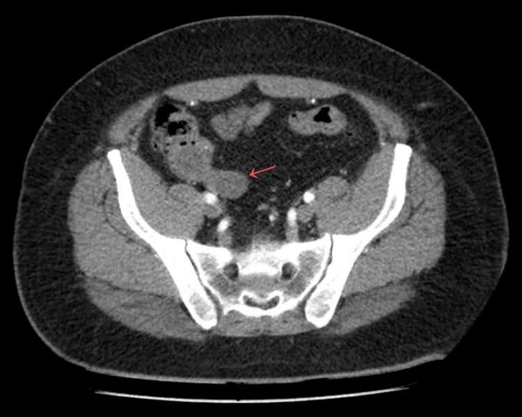
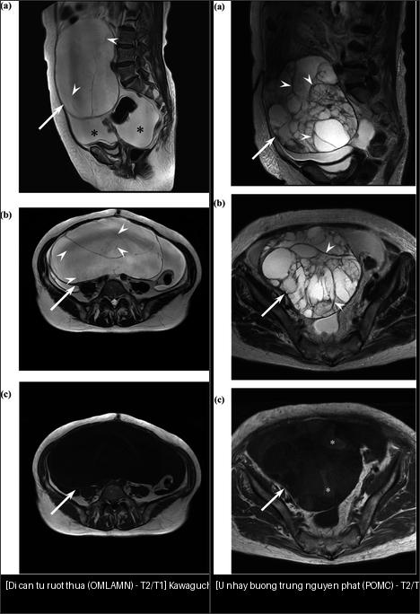
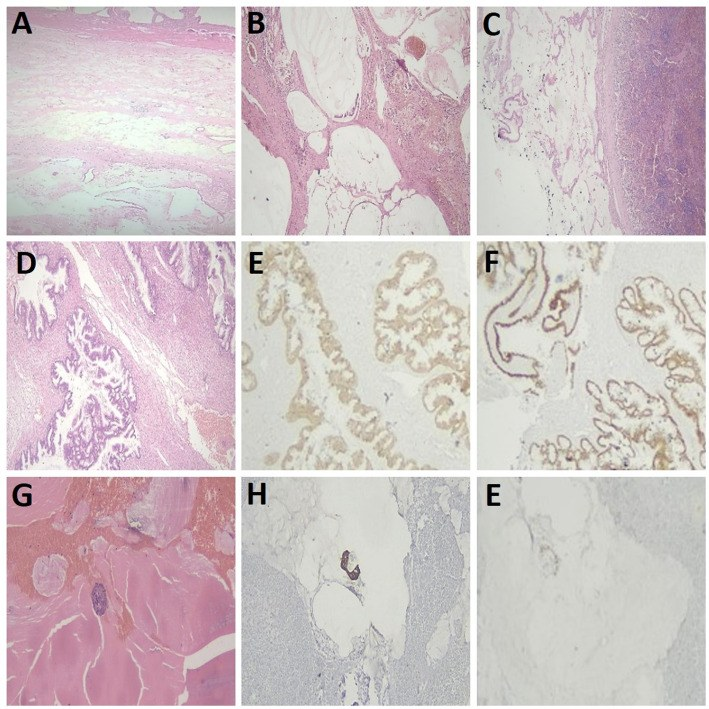
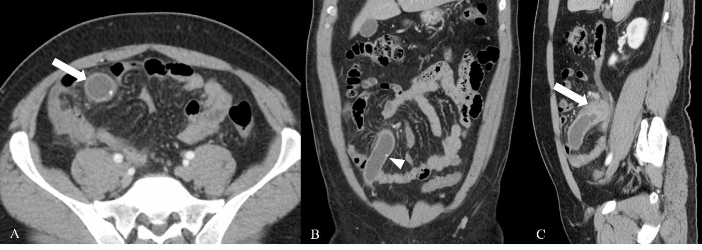
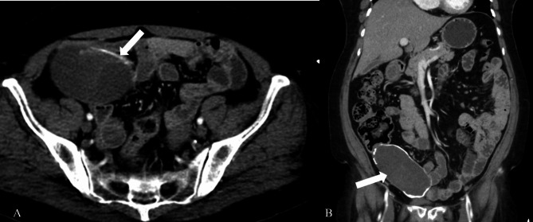
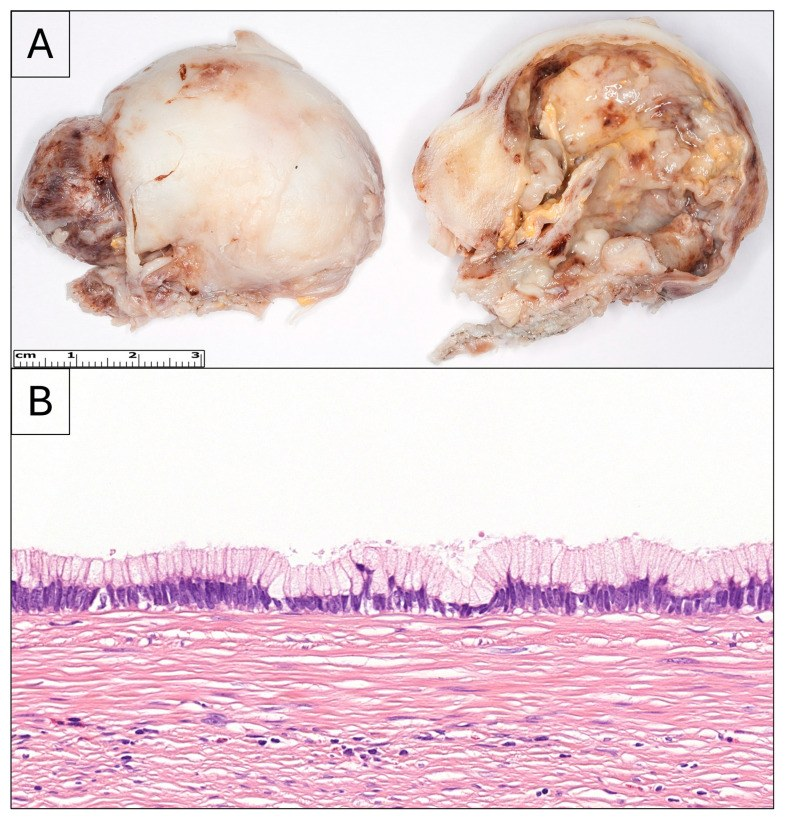
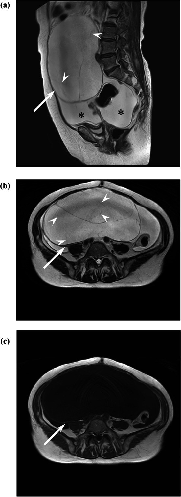
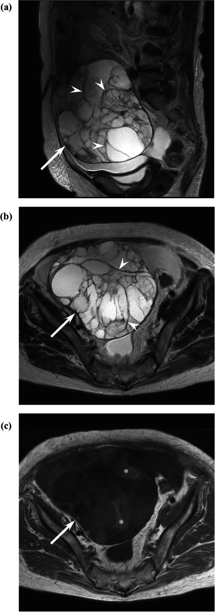

134 — U nhầy ruột thừa CHƯA vỡ (LAMN/HAMN) & phân biệt gốc u nhầy ruột thừa vs buồng trứng bằng hóa mô miễn dịch (IHC) / Appendiceal mucinous neoplasm & ovarian-origin workup
Tags: pattern:gian-ruot-thua vung:ruot-thua pattern:u-nhay score:WHO-AMN protocol:CT-bung-co-can-quang protocol:MRI-chau incidentaloma:u-nhay-ruot-thua
Mức chắc chắn (certainty): tổng hợp y văn (literature synthesis) — nhóm tự biên từ y văn mở (Cureus/Diagnostics/BMC Gastroenterol/Jpn J Radiol/Discover Oncol/Pathol Oncol Res), có ca nguyên văn minh họa trong quiz.
Câu chốt của bài: một ruột thừa giãn dạng nang (mucocele) chưa vỡ, tình cờ trên CT — việc cần làm KHÔNG phải "mổ ruột thừa" đơn thuần, mà là (1) phân biệt viêm vs tân sinh nhầy, (2) đo đường kính + tìm mô mềm/vôi hóa thành, (3) tìm mucin ngoài ruột thừa (đã vỡ → nguy cơ pseudomyxoma peritonei — PMP), và ở nữ giới có khối phần phụ kèm theo: (4) xác định gốc bằng hóa mô miễn dịch (immunohistochemistry — IHC) vì u nhầy buồng trứng "di căn từ ruột thừa" và u nhầy buồng trứng nguyên phát trông rất giống nhau nhưng điều trị khác hẳn.
1. Tổng quan bệnh học – cơ chế hình ảnh
- Bệnh học (pathology): u nhầy ruột thừa (appendiceal mucinous neoplasm — AMN) là tổn thương biểu mô nhầy sản xuất mucin làm lòng ruột thừa căng thành nang (mucocele). Phân loại WHO 2019: serrated polyp / hyperplastic polyp (lành) → LAMN (u nhầy ruột thừa độ thấp — low-grade appendiceal mucinous neoplasm) → HAMN (độ cao) → mucinous adenocarcinoma (đã xâm lấn mô đệm). LAMN không xâm lấn mô đệm nhưng có thể đè/vỡ thành ruột thừa → rò mucin ra phúc mạc = pseudomyxoma peritonei (PMP, u giả nhầy phúc mạc). Vì vậy LAMN là "u lành bề ngoài nhưng hành vi ác khi vỡ".
- TẠI SAO thấy dạng nang trên hình ảnh (cơ chế vật lý):
- Mucin giàu nước + glycosaminoglycan → CT: đậm độ thấp ~0–20 HU (đôi khi thấp hơn dịch đơn thuần), dịch đồng nhất, không ngấm thuốc.
- MRI T2: rất sáng (nước tự do → thời gian T2 dài). T1: tùy độ đặc — mucin đặc/quánh thì T1 sáng; nhiều nang nhỏ T1 sáng rải rác tạo "ô kính màu" (stained-glass appearance). Khi nghi u tân sinh mô đặc, DWI hạn chế + ADC thấp.
- Vôi hóa thành ruột thừa = lắng đọng canxi trên thành xơ-mucin mạn (hay gặp ở LAMN hơn là viêm cấp).
- Dịch tễ + ngưỡng định lượng: AMN chiếm 0,4–1,7% mẫu cắt ruột thừa và < 1% ca ung thư; PMP ~22/1.000.000 người/năm (Kawecka 2025). Tuổi trung bình ~55,8 (IQR 47,8–81), đường kính khối trung bình ~7,5 cm, 80,9% nữ trong một chuỗi LAMN/PMP (Hamdy 2025). ~30% bệnh nhân AMN được chẩn đoán trước mổ là "viêm ruột thừa cấp"; ~50% nữ có AMN phát triển di căn buồng trứng (Kawecka 2025). Ruột thừa bình thường ≤ 6 mm.
2. Mẫu hình + chẩn đoán phân biệt theo vị trí (gamut)
- Ruột thừa giãn dạng nang (cystic/dilated appendix) — gamut:
- Viêm (viêm ruột thừa mủ có giãn lòng, mucocele viêm);
- Tăng sản niêm mạc / nang đơn thuần (benign mucocele);
- LAMN (là nhóm lành-tiềm ẩn hay gặp nhất);
- HAMN và mucinous adenocarcinoma (xâm lấn, nguy cơ phúc mạc);
- U carcinoid / NET ruột thừa (khối đặc, thường < 2 cm, hay ở đỉnh ruột thừa);
- (Hiếm) u mô đệm, endometriosis, di căn.
- Khối phần phụ nữ dạng nang nhiều ngăn — gamut (bài 530/535/537/539): di căn buồng trứng từ AMN (ovarian metastasis from appendiceal mucinous neoplasm — OMLAMN) · u nhầy buồng trứng nguyên phát (primary ovarian mucinous carcinoma — POMC) · u giáp biên nhầy (BOT nhầy) · cystadenoma/cystadenofibroma · nang lạc nội mạc · u quái.
- Quy tắc "cờ đỏ" gợi tân sinh nhầy ác/xâm lấn: mô mềm/nốt đặc ở thành hoặc đáy ruột thừa + dịch mucin/mô mềm ngoài ruột thừa (đã vỡ) + "khía" (scalloping) mặt gan–lách / dịch phúc mạc khu trú → nghi HAMN/adenocarcinoma ± PMP, KHÔNG được chọc/dẫn lưu ngang qua.

*Cấu trúc dạng ống chứa dịch, đậm độ thấp ở hố chậu phải = ruột thừa giãn (mũi tên đỏ); không thấy vỡ, áp-xe, dịch ổ bụng hay xâm lấn. Nguồn: Silva García M et al., Cureus 2026 (PMC13300836), CC BY 4.0.*3. Bảng so sánh phân biệt (ma trận đối chiếu)
| Thực thể (entity) | Hình ảnh điển hình | Chốt vào (rule-in) | Chốt loại (rule-out) | Gợi ý xác nhận |
|---|---|---|---|---|
| Mucocele VIÊM (viêm ruột thừa mủ giãn lòng) | Ruột thừa giãn ≤ 2,3 cm, thành ngấm nhẹ, thâm nhiễm mỡ quanh, không vôi hóa nội thành, không vách | Đường kính ≤ 2,3 cm + không mô mềm/vôi hóa/vách (Se 71%, Sp 90%, PPV 94%) | Mô mềm thành + vôi hóa + vách → tân sinh nhầy | Lâm sàng viêm cấp, hồi phục sau cắt ruột thừa |
| LAMN (u nhầy độ thấp, chưa xâm lấn) | Ruột thừa giãn lớn, vôi hóa thành 38,7% (92% trong nhóm lành), vách/vách trong, mucin đồng nhất | Vôi hóa thành + vách + không mô mềm ở đáy | Mô mềm ở ĐÁY ruột thừa → nghĩ HAMN/adenocarcinoma | Mô bệnh học (không xâm lấn mô đệm), bờ cắt |
| HAMN / mucinous adenocarcinoma | Khối lớn, mô mềm/nốt đặc ở thành hoặc đáy, có thể mucin ngoài ruột thừa/dịch phúc mạc | Mô mềm thành + đường kính > 2,3 cm (p = 0,01) → cân nhắc cắt đại tràng phải (right hemicolectomy) | Vỏ nang thuần + không mô mềm + không mucin ngoài → LAMN/viêm | Mô bệnh + hạch, CRS/HIPEC khi có phúc mạc |
| OMLAMN (di căn buồng trứng từ AMN) | Khối < POMC (trung vị 129 vs 182 mm)**, **dịch thuần nhiều ngăn**, **vách MỜ (faint septa) 94% (dày > 50% vách: 75%), dịch ổ bụng 93%, không "ô kính màu" | Vách mờ + dịch ổ bụng + không "ô kính màu" + CEA cao (22 vs 6,5 ng/mL) | "Ô kính màu" + nang T1 sáng (81%) → POMC | IHC CDX2+/CK20+/SATB2+ (PAX8−, CK7−) |
| POMC (u nhầy buồng trứng nguyên phát) | Khối lớn hơn (182 mm), nang T1 sáng 81%, "ô kính màu" 72%, ít dịch ổ bụng (11%) | "Ô kính màu" + nang T1 sáng + không vách mờ | Vách mờ + dịch ổ bụng + CEA cao → OMLAMN | IHC CK7+/PAX8+ (SATB2−, CK20 ít) |

*Trái: OMLAMN — khối nang thuần nhiều ngăn, vách mờ (đầu mũi tên), dịch ổ bụng (dấu *), không "ô kính màu". Phải: POMC — nang nhiều ngăn với "ô kính màu" trên T1 (dấu ). Nguồn: Kawaguchi M et al., Jpn J Radiol 2026 (PMC13400669), CC BY 4.0. Ảnh ghép letterbox.Bảng hóa mô miễn dịch (IHC) — chốt GỐC u (bắt buộc ở nữ có khối phần phụ kèm AMN)
| Dấu ấn (marker) | LAMN/HAMN (gốc ruột thừa) | Mucinous adenocarcinoma ruột thừa | POMC (gốc buồng trứng) |
|---|---|---|---|
| CK20 | 90–100% dương | 96–100% dương | ít gặp |
| CDX2 | 92–100% dương | 93% dương | có thể dương (chồng lấn!) |
| SATB2 (đặc hiệu nhất cho u ruột thừa) | 96–100% dương | 83–100% dương | âm |
| CK7 | 14–36% dương (thường âm) | 28–50% dương | dương |
| PAX8 | âm | âm | dương (gợi ý gốc buồng trứng/Müller) |
Bộ dấu ấn thực hành hay dùng: CK7 + CK20 + CDX2 + PAX8 + SATB2. Mấu chốt: SATB2 dương + PAX8 âm + CK7 âm = gốc ruột thừa; PAX8 dương + CK7 dương + SATB2 âm = gốc buồng trứng. CDX2 một mình không đủ (có thể dương ở POMC). Đột biến KRAS/GNAS/TP53 hay gặp ở AMN/PMP (không đặc hiệu trên hình ảnh).

LAMN di căn: (D) mô u trong buồng trứng, IHC dương CK20 (E) và CDX2 (F) — xác nhận gốc ruột thừa. Nguồn: Hamdy O et al., Discover Oncology 2026 (PMC13066059), CC BY 4.0.4. Protocol chụp + phân độ + flowchart
- CT bụng–chậu có cản quang (chuẩn đầu tiên): đo đường kính lớn nhất của ruột thừa (mm), tìm vôi hóa nội thành, vách, nốt/mô mềm thành hoặc đáy, dịch-mucin ngoài ruột thừa, đánh giá phúc mạc ("khía" mặt gan–lách, đóng bánh mạc nối = PMP). KHÔNG chọc/dẫn lưu qua mucocele (nguy cơ gieo rắc mucin).
- MRI chậu (khi khối phần phụ hoặc cần phân biệt gốc): T2W + T1W (đánh giá "ô kính màu") + T1W fat-sat + DWI/ADC.
- Ngưỡng đường kính (Khandwala 2025, n = 31): > 1,4 cm Se 90%/Sp 50%; > 3,0 cm Sp 100%/Se 43%; viêm vs tân sinh: cắt ≤ 2,3 cm (Se 71%, Sp 90%, PPV 94%). Mô mềm thành → ác (p = 0,01); vôi hóa thành gặp 38,7%, 92% trong nhóm lành; cắt đại tràng phải khi mô mềm + đường kính > 2,3 cm.
- Phân độ WHO 2019 (AMN) + xử trí: LAMN/HAMN khu trú, chưa vỡ → cắt ruột thừa (± bờ cắt âm); vỡ/ có mucin ngoài ruột thừa / có phúc mạc → đánh giá CRS (cytoreductive surgery) + HIPEC; xâm lấn đáy/bờ cắt dương → cắt đại tràng phải + nạo hạch.
flowchart TD
A[Ruột thừa giãn dạng nang trên CT] --> B{Đường kính + mô mềm thành?}
B -->|"≤2,3 cm, không mô mềm/vôi hóa"| C[Viêm: cắt ruột thừa, theo dõi]
B -->|">2,3 cm hoặc có mô mềm thành"| D{Mucin/mô mềm NGOÀI ruột thừa?}
D -->|Không| E[LAMN/HAMN khu trú: cắt ruột thừa + bờ cắt]
D -->|Có| F[Nghi vỡ/PMP: CT phúc mạc + hội chẩn CRS/HIPEC]
E --> G{Đáy ruột thừa/bờ cắt dương?}
G -->|Có| H[Cắt đại tràng phải + nạo hạch]
G -->|Không| I[Theo dõi]
F --> J[IHC + mô bệnh: CK20/CDX2/SATB2 vs PAX8]
H --> J
J --> K{Ở NỮ có khối buồng trứng?}
K -->|SATB2+, PAX8−| L[Gốc RUỘT THỪA: xử trí theo AMN]
K -->|PAX8+, CK7+, SATB2−| M[Gốc BUỒNG TRỨNG: theo POMC/O-RADS]
5. Biến thể bình thường và cạm bẫy
- Ruột thừa chứa đầy dịch (sau viêm khu trú, sau cắt túi mật) có thể bị đọc nhầm mucocele — thiếu vôi hóa/vách/mô mềm và bờ đều hơn.
- Dấu "vỏ hành" (onion-skin sign) trên siêu âm (các lớp hồi âm đồng tâm do mucin/vách) gợi mucocele nhưng không phân biệt được viêm vs tân sinh.
- CẤM chọc hút/dẫn lưu mucocele mù — có thể biến LAMN khu trú thành PMP toàn ổ bụng.
- Vôi hóa thành KHÔNG đồng nghĩa ác — thực tế 92% vôi hóa nằm trong nhóm lành/LAMN; tín hiệu ác mạnh hơn là mô mềm thành/đáy.
- U carcinoid ruột thừa là khối ĐẶC, không phải dạng nang — nhưng có thể kèm AMN đồng thời (ca hiếm, xem quiz ca 6).
- Bẫy hình thái buồng trứng: OMLAMN và POMC chồng lấn; CDX2 dương ở cả hai → phải phối hợp SATB2/PAX8/CK7, và CEA/CA125 hỗ trợ (CEA cao hơn trong OMLAMN).
- "Khía" mặt gan–lách (scalloping) = dấu hiệu PMP nhưng có thể nhầm với báng tự do (mặt tạng nhẵn) hoặc carcinomatosis (nốt đặc xâm lấn) — xem bài 539.
6. Tự lượng giá — Blind Quiz (ảnh trơn ngoài, đáp án giấu trong thẻ bấm-mở)
Ca 1 — Nam 57 tuổi, đau hạ vị, CT có cản quang:

- Câu hỏi: Ruột thừa có gì bất thường? Dấu hiệu nào gợi tân sinh nhầy thay vì viêm? Nguy cơ cần loại trừ?
Bấm để hiện đáp án (findings + chẩn đoán)
- Dấu hiệu: ruột thừa giãn chứa dịch, vôi hóa nội thành nhỏ (đầu mũi tên, B) và dày mô mềm bờ mờ ở ĐÁY ruột thừa (mũi tên, C) + thâm nhiễm mỡ quanh nhẹ (A).
- Chẩn đoán: mucocele ruột thừa — mô bệnh là mucinous adenocarcinoma. Đáy ruột thừa có mô mềm là cờ đỏ gợi tân sinh ác/xâm lấn (p = 0,01); cần loại trừ mucin ngoài ruột thừa → PMP (xem mục 4).
- Vì sao: mucin đậm độ thấp, không ngấm; vôi hóa thành + mô mềm đáy phân tầng nguy cơ.
- Nguồn: Khandwala K et al., BMC Gastroenterol 2025 (PMC11776275), CC BY-NC-ND 4.0 (nguyên bản, không ghép).
Ca 2 — Nữ 68 tuổi, đau bụng mơ hồ, CT:

- Câu hỏi: Mô tả hai dấu hiệu trên thành nang. Nghĩ nhóm nào (viêm hay tân sinh)? Xử trí?
Bấm để hiện đáp án
- Dấu hiệu: vôi hóa thành và vách/vách ngăn trong một khối nang lớn >> 2,3 cm ở hố chậu phải (A, B).
- Chẩn đoán: LAMN (u nhầy ruột thừa độ thấp) — mô bệnh xác nhận.
- Xử trí: LAMN khu trú chưa vỡ → cắt ruột thừa với bờ cắt âm; nếu đáy/bờ cắt dương → cắt đại tràng phải. Vôi hóa + vách hướng nhóm lành/LAMN (92% vôi hóa nằm trong nhóm lành) — nhưng vẫn phải kiểm tra mucin ngoài ruột thừa.
- Nguồn: Khandwala K et al., BMC Gastroenterol 2025 (PMC11776275), CC BY-NC-ND 4.0 (nguyên bản).
Ca 3 — Nữ trung niên, siêu âm vùng hố chậu phải vì đau bụng + sốt:

- Câu hỏi: Dấu hiệu trên siêu âm? Kích thước? Nghi gì và cần làm gì trước mổ?
Bấm để hiện đáp án
- Dấu hiệu: siêu âm thấy ruột thừa giãn dạng nang với vôi hóa trong thành (intramural calcifications), khối lớn nhất 5 cm; lâm sàng giống viêm ruột thừa cấp.
- Chẩn đoán: mucocele ruột thừa → LAMN. Mô tả đại thể khớp (túi mucin).
- Xử trí: cắt ruột thừa nguyên khối, tránh làm vỡ; không chọc/dẫn lưu.
- Nguồn: Csonka B et al., Diagnostics 2026 (PMC12840484), CC BY 4.0.
Ca 4 — Nữ 71 tuổi, MRI chậu vì khối phần phụ (bối cảnh có LAMN ruột thừa):

- Câu hỏi: Khối nang này là nguyên phát buồng trứng hay di căn ruột thừa? Ba dấu hiệu MRI nào chốt?
Bấm để hiện đáp án
- Dấu hiệu: khối nang thuần nhiều ngăn, không thành phần đặc, vách rất mờ (< 2 mm, > 50% vách), dịch ổ bụng nhiều (dấu *), T1 KHÔNG "ô kính màu".
- Chẩn đoán: di căn buồng trứng từ AMN (OMLAMN). Ba chốt: vách mờ (94% vs 31%) · vách mờ > 50% (75% vs 3%) · dịch ổ bụng (93% vs 11%); ngược lại POMC hay có "ô kính màu" (72%) + nang T1 sáng (81%). Cỡ OMLAMN nhỏ hơn POMC (trung vị 129 vs 182 mm). Xác nhận: IHC SATB2+/CDX2+/CK20+, PAX8−, CK7−.
- Nguồn: Kawaguchi M et al., Jpn J Radiol 2026 (PMC13400669), CC BY 4.0.
Ca 5 — Nữ 82 tuổi, MRI chậu vì khối nang lớn phần phụ:

- Câu hỏi: Dấu hiệu đặc trưng trên T1? Chẩn đoán? IHC dự kiến?
Bấm để hiện đáp án
- Dấu hiệu: khối nang nhiều ngăn lớn với "ô kính màu" (stained-glass appearance) trên T1 (dấu *), không vách mờ nổi bật.
- Chẩn đoán: POMC — u nhầy buồng trứng nguyên phát. IHC dự kiến: CK7+/PAX8+ (SATB2−). "Ô kính màu" 72% ở POMC vs 25% ở OMLAMN.
- Cạm bẫy phản biện: CDX2 có thể dương ở POMC → không dùng CDX2 đơn độc; phải có PAX8/CK7/SATB2.
- Nguồn: Kawaguchi M et al., Jpn J Radiol 2026 (PMC13400669), CC BY 4.0.
Ca 6 — Nam, ruột thừa có cả tổn thương dạng nang VÀ mô đặc (bối cảnh hiếm):
- Câu hỏi: Một ruột thừa có thể chứa đồng thời hai loại u không? Chốt chẩn đoán bằng gì?
Bấm để hiện đáp án
- Trả lời: Có — đã ghi nhận LAMN đồng thời với u thần kinh nội tiết biệt hóa cao (well-differentiated neuroendocrine tumor — WDNET) của ruột thừa, thậm chí biểu hiện PMP. Phần nang = LAMN (biểu mô nhầy nhú), phần đặc = WDNET/chromogranin-synaptophysin dương.
- Chốt: mô bệnh học + IHC (mucin/CK20-CDX2 cho LAMN; synaptophysin/chromogranin cho NET) — hình ảnh một mình không tách được hai thành phần.
- Nguồn (chỉ trích ca, không lấy ảnh): Stevens T et al., Cureus 2026 (PMC13570431), CC BY 4.0.
Bài liên quan chéo
- 100 – Tổng quan hệ Bụng
- 539 – Pseudomyxoma peritonei & u nhầy ruột thừa (đã lan phúc mạc)
- 535 – Ung thư buồng trứng, phúc mạc & u Krukenberg
- 537 – U buồng trứng giáp biên (borderline)
- 530 – Phần phụ O-RADS (US/MRI)
- 162 – Tắc ruột & mạc treo (bài toán ruột thừa giãn/viêm)
- 141 – Phúc mạc
Ảnh
134_mucocele-ngam-thuoc_CT_PMC11776275.jpg,134_mucocele-lanh-voi-hoa_CT_PMC11776275.jpg— Khandwala K et al., BMC Gastroenterol 2025, CC BY-NC-ND 4.0 (nguyên bản).134_di-can-tu-ruot-thua_MRI_PMC13400669.jpg,134_u-nhay-buong-trung-nguyen-phat_MRI_PMC13400669.jpg— Kawaguchi M et al., Jpn J Radiol 2026, CC BY 4.0.134_IHC-CK20-CDX2_PMC13066059.jpg— Hamdy O et al., Discover Oncology 2026, CC BY 4.0.134_sieu-am-voi-hoa_PMC12840484.jpg— Csonka B et al., Diagnostics 2026, CC BY 4.0.134_mucocele-CT-truc_PMC13300836.jpg— Silva García M et al., Cureus 2026, CC BY 4.0.composite_di-can-ruot-thua-vs-u-nhay-buong-trung.jpg— ảnh ghép letterbox (CC BY 4.0, tác phẩm phái sinh từ PMC13400669).- Nguồn + giấy phép từng ảnh:
images/CREDITS.md.
Disclaimer y tế: Không dùng để chẩn đoán độc lập khi chưa có người hướng dẫn.